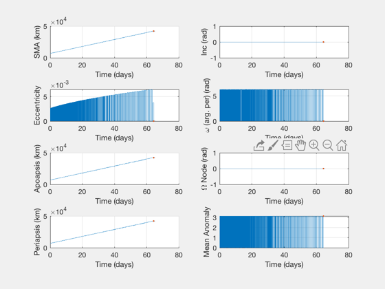

Raise an orbit with a sequence of Hohmann transfers limited by delta-V
Apply a fixed delta-V limit to an orbit raising problem via a sequence of Hohmann transfers.
If the delta-V limit is a small portion of the optimal Hohmann DV, the total delta-V is just a little less than a low-thrust spiral. The sequence solution takes about half the time of the single-lap solution. If the DV available is very low, the low-thrust spiral (at 1 m/s2 acceleration) is actually faster.
If there is a lot of DV available per burn, the sequence of Hohmann transfers can actually take longer than the single-lap solution.
Contents
See also
ComputeHohmannDVLimit, DVHoh, BreakImpulsesByDeltaV, BurnTimesImpulsive, PlotImpulsiveTrajectory, PlotElementsImpulsive
%-------------------------------------------------------------------------- % Copyright (c) 2019 Princeton Satellite Systems, Inc. % All rights reserved. %--------------------------------------------------------------------------
Parameters
doCase = 'GEO'; switch doCase case 'GEO' % The Hohmann DV from 7000 to 42000 km is about 3.76 km/s r0 = 6900; r1 = 42200; maxDV = 0.01; % km/s. compare 0.01 to 0.1 to 0.5 case 'LEO' r0 = 6378+400; r1 = 6378+2000; maxDV = 0.002; % km/s. compare 0.01 to 0.1 to 0.5 end
Compute a sequence of Hohmann transfers limited by the max DV
dir = sign(r1-r0); dV = 0; dVs = []; tRs = []; ang = []; dHs = []; r = r0; tE = 0; done = false; while ~done % two burns, each less than maxDV [dv1,dv2,dH] = ComputeHohmannDVLimit( r, maxDV, dir ); dT = 0.5*Period( (2*r+dH)/2 ) + 0.5*Period(r+dH); tE = tE+dT; r = r+dH; if r>r1 % recompute the last segment to reach r1 exactly r2 = r - dH; [~,dv1,dv2] = DVHoh( r2, r1, VOrbit(r2) ); dT = 0.5*Period( (2*r2+dH)/2 ); tE = tE+dT; done = true; end dV = dV + dv1 + dv2; dVs = [dVs dv1 dv2]; tRs = [tRs 0.5 0.5]; ang = [ang 1 -1]; dHs = [dHs dH]; end tRs(1) = 0;
Comparisons
el0 = [r0 0 0 0 0 0]; % compare to low thrust accel = 1e-6; % km/s2 [dVlow,~,tLow] = LTSpiral( r0, r1, accel ); % compare to single Hohmann [dvOpt,dvO1,dvO2] = DVHoh( r0, r1, VOrbit(r0) ); % compare to single lap solution burns = [dvO1 pi/2 pi/2 0; dvO2 pi/2 -pi/2 0.5]; [burnsLap] = BreakImpulsesByDeltaV( burns, maxDV ); [absTimes, relTimes, elSingle] = BurnTimesImpulsive( el0, burnsLap); fprintf('\nDV limit: %.3f km/s\n\n',maxDV) fprintf('Single-lap: %.3f km/s, %.1f days\n',dvOpt,absTimes(end)/86400) fprintf('Low thrust: %.3f km/s, %.1f days (at %g m/s2)\n',dVlow,tLow,accel*1e3) fprintf('Pairs: %.3f km/s, %.1f days\n',dV,tE/86400) fprintf('\nDV pairs is %.2f %% higher than optimal.\n',(dV/dvOpt-1)*100) fprintf('\nDV pairs is %g km/s lower than spiral.\n',(dVlow-dV))
DV limit: 0.010 km/s Single-lap: 3.808 km/s, 128.4 days Low thrust: 4.527 km/s, 52.4 days (at 0.001 m/s2) Pairs: 4.527 km/s, 65.4 days DV pairs is 18.87 % higher than optimal. DV pairs is 1.92559e-05 km/s lower than spiral.
Build a trajectory
nV = length(dVs); burnsPairs = [dVs' pi/2*ones(nV,1) ang'*pi/2 tRs']; [absTimes, relTimes, elPairs] = BurnTimesImpulsive( el0, burnsPairs); if nV<50 PlotImpulsiveTrajectory(el0,burnsPairs); end PlotElementsImpulsive(el0,burnsPairs); [time,tlabl] = TimeLabl(absTimes'); Plot2D(time,dVs,tlabl,'Delta-V','Hohmann Series DVs') %--------------------------------------